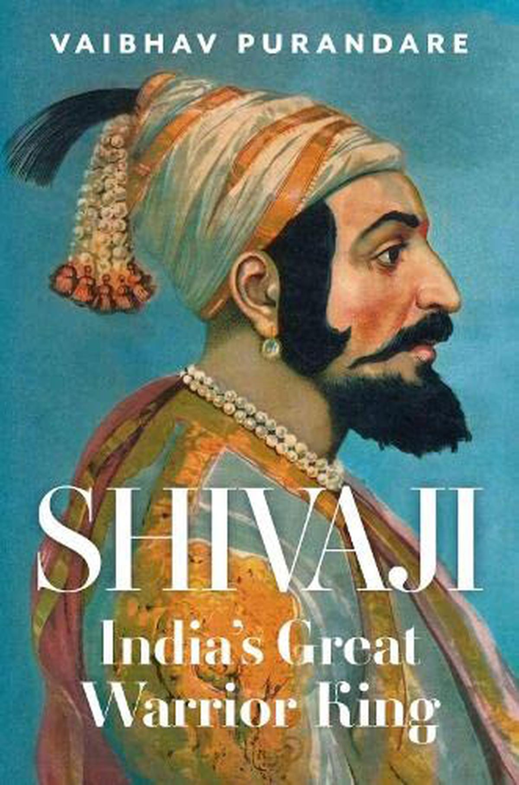

Summary:
Chhatrapati Shivaji Maharaj, the legendary seventeenth century Maratha warrior who audaciously took on the Mughal empire at the height of its powers under Emperor Aurangzeb, is one of the most compelling figures of early modern India. This book charts the dizzying story of this self-made military hero who started out as a teenage rebel of great precocity and daring, and ended up crowning himself king of an independent Maratha state. Especially relevant is Purandare’s erudite and insightful exploration of whether Shivaji was a Hindu icon, as many have labelled him, or a secular figure, as others have chosen to call him, or something altogether more complex and thought-provoking. This biography corrects many falsities and myths, and it is the only book you need to read about one of India’s greatest heroes.